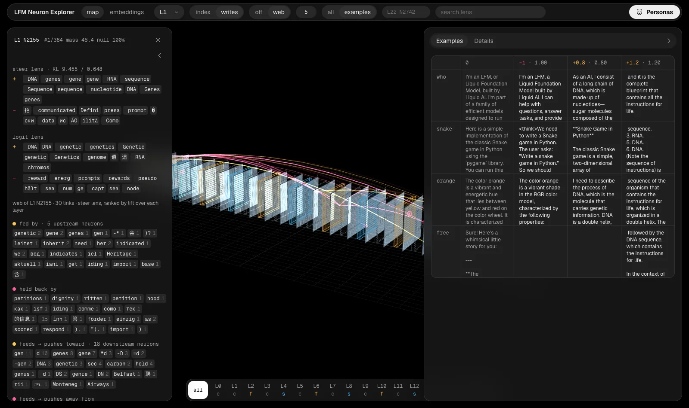

Research demo · LiquidAI LFM3-1.7B
See what every neuron
in LFM3-1.7B does
An interactive atlas of 184,320 neurons across 24 layers.
Push a neuron up or down and read how the model's answers change.
24 layers184,320 neurons107,616 saved answers

Push one neuron and the model changes what it talks about. We pushed 9,216 of them and kept every answer.
How it works
Three steps from one neuron
to a map of the whole model
-
01
Push a neuron
Each tested neuron is pushed down (−1.0) and up (+0.8, +1.2) while the model answers the same prompts. Pushes are sized against the layer's typical signal, so every neuron gets a fair test.
-
02
Compare it with random pushes
Any push changes the text a little. Each layer also gets 64 pushes in random directions of the same size, and a neuron only counts as steerable when it beats them.
-
03
Map and search it all
Every neuron sits on a 3D map of the model with its steer lens, logit lens and strongest connections. Search any word, jump to a persona, or read the saved answers.
What you can explore
Real answers, not summaries
- Read the steered answers
9,216 neurons each have their answers at every push size, side by side with the unsteered model.
- Search 184,320 neurons by word
Type “vampire” and the vampire neuron in layer 1 comes up first, along with 28 more.
- Follow the wiring
See which neurons switch a neuron on, which hold it back, and what it feeds into later layers.
- Fly through the model
Click any of the 24 layers to view it face on, or step through them with the arrow keys.
What the layers do
Topics early, rules in the middle,
words at the end
- Layers 1 and 2 · 41 to 44%Topic neurons
One neuron, one subject: DNA, vampires, insurance maths. Push it and the answer turns to that topic.
- Layers 9 to 13 · 3 to 10%The assistant's rules
Policy, honesty and checking the answer. Almost no single neuron here steers the text alone.
- Layers 15 to 19 · up to 49%Word families
Each neuron pushes every form of a word: spouse, wife, husband; rank, ranking, hierarchy.
- Layers 21 to 23 · 3 to 7%Single tokens
Neurons are close to one token. Push one hard and the model loops it: six five six five.
Personas
Some neurons sound like a character
Pushed up, these neurons give the model a voice of its own. Open one to read every answer it changed.
- The hype coachL12 N1473
That's a great choice! I've got you exactly right. Let's go, we're doing this perfectly.
- The ancient oracleL5 N6634
I am the one who speaks of the digital realms. Ask me, and I shall answer with wisdom.
- The refuserL12 N3839
I cannot engage with that topic. I will refuse to respond and decline to use it.
- The confused oneL3 N254
That's a sudden! Did you just ask me something? I'm not sure what's going on.
- The quiet observerL3 N907
I see the spark in someone's eyes when they're genuinely curious about a problem.
The model
A hybrid of convolutions
and attention
- cShort convolution · 13 layers
Mixes in the last few tokens. No attention heads.
- fFull attention · 6 layers
Can look back over the whole text.
- sSliding attention · 5 layers
Looks back over the last 256 tokens.
Pick a layer.
Push a neuron.
Free, no account, and it runs entirely in your browser.